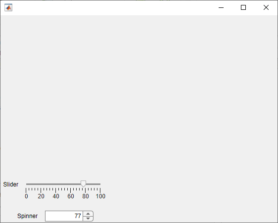
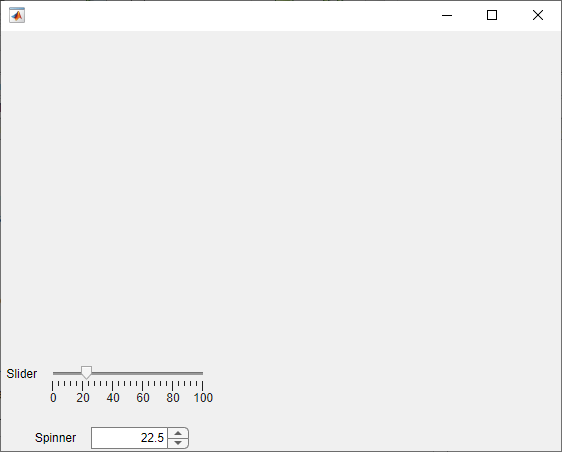

Verify Behavior of Custom UI Components in App Designer
Starting in R2022a, you can create custom UI components interactively in App Designer. For an example of how to use App Designer to create a slider-spinner component with linked values, see Create a Simple Custom UI Component in App Designer.
While you are developing your custom UI component in App Designer, there are multiple ways to verify that your component works as you expect.
Run Component — Use this method to run your code to check for errors and to view the component in a UI figure window.
Create Component from Command Window — Use this method to verify the public properties and callbacks of your component.
Add Component to App — Use this method only when you are done developing and debugging your component code, to view your component in an App Designer app.
Run Component
At any point in the development process, you can run your component code by clicking
 Run. App Designer creates a UI figure window that contains your
custom UI component.
Run. App Designer creates a UI figure window that contains your
custom UI component.
Run your component while you are actively developing your custom UI component to:
Check that your component is created without errors.
Debug your component code using the debugger.
View your component layout in a running app.
Verify the behavior of underlying component callbacks.
For example, while you are developing a slider-spinner component with linked values, you can run the component to verify that moving the slider thumb also changes the spinner value.

Create Component from Command Window
When your component code runs without errors and you are ready to verify the behavior of public properties and callbacks, create the component from the MATLAB® Command Window. Use this method to:
Verify how your component responds when a public property is set.
Assign a callback to your component and verify that it executes in response to an interaction.
To create the component from the Command Window, add the folder that contains your component MLAPP file to the MATLAB path. Enter the component name and return the component object as a variable:
comp = ComponentFileName
For example, if you have created a slider-spinner component by following the steps in
Create a Simple Custom UI Component in App Designer and saved the
component file as SliderSpinner.mlapp, you can verify the property and
callback behavior programmatically.
To set public properties during component creation, pass the properties as name-value
arguments. Create the component and set the Value property using a
name-value
argument:
comp = SliderSpinner(Value=77);

To set the value of public properties after component creation, use dot notation. Change
the Value property of the comp object, and verify that
the slider and spinner components update to reflect the new value:
comp.Value = 22.5;

Assign a ValueChangedFcn callback that displays the value in the
MATLAB Command
Window.
comp.ValueChangedFcn = @(src,event)disp(src.Value);
Add Component to App
Once you are done debugging and verifying the behavior of specifying properties and callbacks for your component, you can add the component to an App Designer app. Use this method when the development of your component is complete to view the component from the point of view of an app creator who uses the component.
Note
Avoid using your component in an App Designer app to debug and verify the component behavior while you are actively developing your component. If you make a change to your component code while the component is being used in an open App Designer app, you must restart App Designer to see the changes reflected within the app.
To view your component in an App Designer app, open the component file in App Designer and follow these steps:
In the Designer tab, click
 Configure for Apps.
Configure for Apps.Fill out the App Designer Custom UI Component Metadata dialog box, and then click OK.
In the confirmation dialog box, click Add to Path to add the component and generated
resourcesfolder to the MATLAB path.In the Designer tab, click
 New and select Blank App.
New and select Blank App.Drag the component from the Component Library onto the app canvas.
For more information, see Configure Custom UI Components for App Designer.